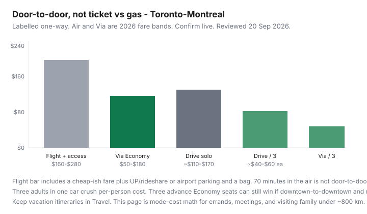

Transportation · Canada
Flight vs train vs drive for short Canadian trips: a transportation cost framework
People compare a $119 flight to $70 of gas and pick the plane. They skip airport parking, the UP Express, a checked bag, a 90-minute buffer, and the taxi in a city they do not know. Short Canadian trips — Toronto–Montréal, Calgary–Edmonton, Toronto–Ottawa — are a door-to-door problem. This framework stays in Transportation: ownership and mode costs for meetings, family errands, and weekend returns. Holiday itineraries belong in Travel.
Train detail: Via vs driving the corridor. Car stack: TCO. Gas: cut litres without a hybrid.
Disclosure: Via deals, gas-rewards cards, and flight-alert tools are offer types. Saving Optimizer may earn a commission if we later add partner links. We do not currently claim airline, Via, or issuer partnerships. Fares are bands, not tickets.
Key takeaways
- Price door-to-door time and cash: access + fare + bag + parking or transit at both ends. Seventy minutes in the air is not a 70-minute trip.
- Airport parking and rideshares routinely add $40–$120 to a “cheap” flight. A bag can add another fare-shaped fee. Downtown Via stations skip that layer.
- Driving with two or more paying passengers usually wins cash under ~800 km if you already own the car. Solo, advance train often wins on the corridor.
- Carbon is secondary on this page. If you want emissions, that is a different article. Here the constraint is the household envelope.
- Worked Toronto–Montréal sketch: flight+access often $160–$280 one way; Via Economy $50–$180; solo drive $110–$170; three in a car $40–$60 each.
Door-to-door time and cost — not just ticket price
Build four lines for each mode: access (home to vehicle/station/airport), the vehicle itself, destination access, and time you cannot use. A 07:00 flight is a 04:30 alarm plus security. A 07:00 Via is a 06:20 walk into Union. A 07:00 drive is a 07:00 drive. If your meeting is at 10:00 downtown, the plane is often the slowest honest option once buffers are in.
Airport parking, rideshare, and baggage fees
Add what you will actually buy:
- UP Express, public transit, or a $45–$70 rideshare each end.
- Airport parking at $20–$40+/day if you leave a car at YYZ/YUL/YYC.
- A checked bag or a carry-on that does not fit — airline fee tables change; assume a number and then look it up.
- The Pearson/Dorval/Calgary weather delay you cannot expense as “the fare was cheap.”
Porter- and Air Canada-style short-haul fares in 2026 still swing from leftover seats under $100 to $300+ walk-up. The band is useless without the access stack.
Train flexibility and downtown station advantage
Union, Ottawa, Central Station, Sainte-Foy, London: you are already where many meetings are. Escape fares are rigid; Economy is a middle. You can work. You cannot easily stop at a suburban warehouse. If the destination is a 401-side industrial park, the downtown station is a bug — price a car or a suburban GO/Via pair instead. Corridor how-to: Via vs driving.

Driving with 2+ passengers changes the math
Fuel and wear are mostly fixed for the car. Two or three adults turn a $140 solo drive into $50–$70 each before parking. The train multiplies by heads. The plane multiplies by heads and access. Kids who do not occupy a fare (policies differ — confirm) can flip a flight; they rarely flip a train that charges them. If you do not already own the car, add the rental and the insurance line — that is a different spreadsheet (and often loses to Via).
Carbon is secondary here — budget first
Mode-shift for climate is real and not this article’s job. If two options are within $20 and an hour, pick the one you will actually take. Do not use carbon as a moral trump card to hide a $400 walk-up fare you could have booked as a $90 Economy three weeks ago.
Worked examples under 800 km
| Trip | Flight + access | Train | Drive (solo / 3) |
|---|---|---|---|
| Toronto–Montréal (~540 km) | $160–$280 | $50–$180 Via | $110–$170 / $40–$60 ea |
| Toronto–Ottawa (~450 km) | often loses time downtown-to-downtown | $45–$150 Via | $90–$140 / cheaper split |
| Calgary–Edmonton (~300 km) | air can win a same-day meeting if both ends are airport-adjacent | limited rail — usually not the product | often the default; winter is the risk line |
Prairie and Atlantic pairs (Halifax–Moncton, Winnipeg–Regina) are drive-or-fly problems. Do not force a Via-shaped answer onto a map that does not have the train.
Boundary with Travel content: commuting, errands vs holidays
Stay on this page when the trip is a meeting, a family weekend you will repeat, or a cost comparison you will reuse. Use Travel when you are building a vacation: seat sales as a hobby, multi-city, hotels, points runs. The same Toronto–Montréal Friday can be either — if the point is “what did the mode cost,” it is Transportation. If the point is “three days in Old Montréal,” it is Travel with a transportation line inside the trip budget.
One-page chooser: (1) heads, (2) both ends downtown?, (3) already own a car?, (4) date flexibility?, (5) winter driving risk? Downtown + solo + flexible date → train. Three adults + owned car → drive. Airport-adjacent same-day + tight clock → fly and still add access. Screenshot the totals.
Sources & date stamps
- Companion Via corridor guide — 2026 Economy bands and Escape/Economy rules; viarail.ca for live seats.
- Ratehub 2026 TCO (29 Apr 2026) for driving wear/parking context; fuel sketches use labelled $1.60/L and 8 L/100 km.
- Airport access and parking are user-specific — confirm UP Express, STM, and lot rates the week you travel.
- Airline short-haul fares are demand-based; this page does not quote a carrier.
Frequently asked questions
Is it cheaper to fly or take Via from Toronto to Montréal?
Door-to-door, advance Via is often cheaper for one adult going downtown-to-downtown. A leftover $99 flight can still lose after UP, a bag, and a downtown taxi. Check both with access included.
When does driving win?
When two or more people share one owned car, when the destination is suburban, or when train/air fares went last-minute. Winter storms are a risk line, not a rounding error.
Should I count carbon?
Not on this page. Budget first. If two modes are close, pick the one you will take. Climate-focused comparisons are a different piece.
What about Calgary to Edmonton?
Rail is usually not the product. Fly if both ends are airport-shaped and the day is tight; drive if you already have the car and weather allows. Still add parking.
Is this a Travel article?
No. Repeatable mode-cost math stays in Transportation. Vacation itineraries and seat-sale hobbies sit in Travel.